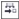

Быстрые ссылки на процедуры, описанные на этой странице:
• |
• |
• |
После создания всех необходимых для рисунка полей данных можно создать базу данных. В окне настройки Данные объекта и Диспетчере данных объектов (рабочий лист запускается из окна настройки Данные объекта) имеются все команды и функции, необходимые для добавления и редактирования сведений об объекте.
Окно настройки Данные объекта идеально подходит для ввода данных единичных объектов. С его помощью можно добавить, изменить и удалить данные объекта. Диспетчер данных объектов, напротив, идеально подходит для ввода и редактирования данных нескольких объектов. Он предоставляет множество функций редактирования, доступных в общераспространенных приложениях для редактирования электронных таблиц.
Элементы данных одного объекта можно использовать для обновления элементов данных другого объекта. Эта функция не заменяет элементы данных объекта, а добавляет поля и данные, когда это целесообразно.
| Добавление или редактирование данных объекта |
1. |
Выберите объект с помощью инструмента Указатель |
2. |
Выберите пункт Инструменты |
3. |
Выберите поле данных. Введите для поля текст в столбце Значение и
нажмите клавишу Enter.
|
4. |
Повторите шаг 3, чтобы добавить данные в другие поля.
|
|
Дополнительные возможности
|
|
|---|---|
|
Удаление данных из одного поля
|
Нажмите кнопку Очистить поле .
|
|
Удаление данных из всех полей
|
Нажмите кнопку Очистить все поля .
|
| Добавление или редактирование данных для нескольких объектов |
1. |
Выберите объекты с помощью инструмента Указатель |
2. |
Выберите Инструменты |
3. |
В окне настройки Данные объекта нажмите кнопку Открыть рабочий
лист .
|
4. |
В окне Диспетчер данных объектов щелкните ячейку и введите
соответствующие данные. Чтобы назначить запись для ячейки, полей и
объектов, нажмите клавишу Enter.
|
| Копирование данных одного объекта в другой объект |
1. |
С помощью инструмента Указатель |
2. |
Выберите Инструменты |
3. |
В окне настройки Данные объекта нажмите кнопку Копировать
данные из .
|
4. |
Щелкните объект, из которого требуется скопировать данные.
|
Copyright 2012 Corel Corporation. Все права защищены.